🖱️ Lesson 7.2: Interactive Charts with Plotly
Give your reader a chart they can question: hover for the exact number, zoom into one week, hide a store, all in a single HTML file that opens in any browser.
🎯 Learning Objectives
By the end of this lesson, you will be able to:
- Build line, scatter, bar, box and heatmap charts with one Plotly Express call each
- Control what a reader sees on hover, and format axes, legends and facet titles
- Decide when animation helps and when small multiples say the same thing better
- Drop down to graph objects to combine trace types, add a second y axis and annotate
- Save a chart as a standalone HTML file, export a static image, and explain what data travels inside the file
In This Lesson
🗺️ From Picture to Document
A Matplotlib or seaborn chart is a picture. Once saved, it answers exactly the question you chose when you drew it. That is a strength in a printed report, and a limit everywhere else. The first thing a reader does with a good chart is ask a follow-up: "what happened in that spike?", "what is the exact figure for June?", "can I see only Flagstaff?" With a picture, each of those is an email back to you.
💡 Mental Model: The Wall Map and the Map App
A static chart is a map printed on the wall: beautifully composed, the same for everyone, fixed. An interactive chart is a map app: the reader pinches to zoom, taps a pin to read its details, and switches layers on and off. You, the mapmaker, still decide what is on the map and what the default view is. The reader decides where to look next.
Plotly is a Python library that produces charts of the second kind. It is worth knowing how it works, because that explains everything about saving and sharing later on.
Your Python code does not draw anything. It builds a figure: a description of the chart made of traces (the data series) and a layout (titles, axes, legend). That description is handed, as JSON text, to a JavaScript library called plotly.js, which draws it in a web browser and handles the hovering and zooming. A Jupyter notebook is a web page, so the chart appears under your cell. An HTML file is a web page, so the chart works there too, with no Python anywhere near it.
🤔 Why This Matters
Much of an analyst's work is read by people who will never open a notebook. An HTML file with a live chart in it can be emailed, dropped in a shared folder or linked from a wiki, and it opens with a double-click. For exploring your own data, hover and zoom also shorten the loop between "that looks odd" and "that is the Saturday after Thanksgiving".
🚀 Your First Interactive Chart
Plotly has two interfaces. Plotly Express, imported as px, builds a complete figure from a DataFrame in one call, in the same "name the columns" style as seaborn. Graph objects, imported as go, is the lower layer that Express itself is built on. Start with Express: it covers most everyday charts.
import numpy as np
import pandas as pd
import plotly
import plotly.express as px
pd.set_option("display.width", 150)
print(plotly.__version__)
sales = pd.read_csv("data/daily_sales.csv", parse_dates=["date"])
sales["month_start"] = sales["date"].dt.to_period("M").dt.to_timestamp()
monthly = sales.groupby(["store", "month_start"], as_index=False)[["revenue", "visitors", "transactions"]].sum()
print(monthly.head(3))Output
7.1.0
store month_start revenue visitors transactions
0 Asheville 2024-01-01 154849.61 7085 1681
1 Asheville 2024-02-01 126215.59 6364 1454
2 Asheville 2024-03-01 162774.44 8176 1845fig = px.line(monthly, x="month_start", y="revenue", color="store",
title="Monthly revenue by store")
print(type(fig).__name__, "with", len(fig.data), "traces")Output
Figure with 4 tracesNothing has appeared yet. px.line returned a Figure object and stored it in fig. To see it, call its show() method.
fig.show()⚠️ How to See the Charts in This Lesson
Add fig.show() as the last line of every cell that builds a figure. In JupyterLab or a VS Code notebook the chart appears under the cell. In a plain script, fig.show() opens the chart in a new tab of your web browser. The listings below leave that line out, because the code on this page is tested automatically on a machine with no screen. Each listing is followed by a picture of the result and a description of what you can do with the live version.
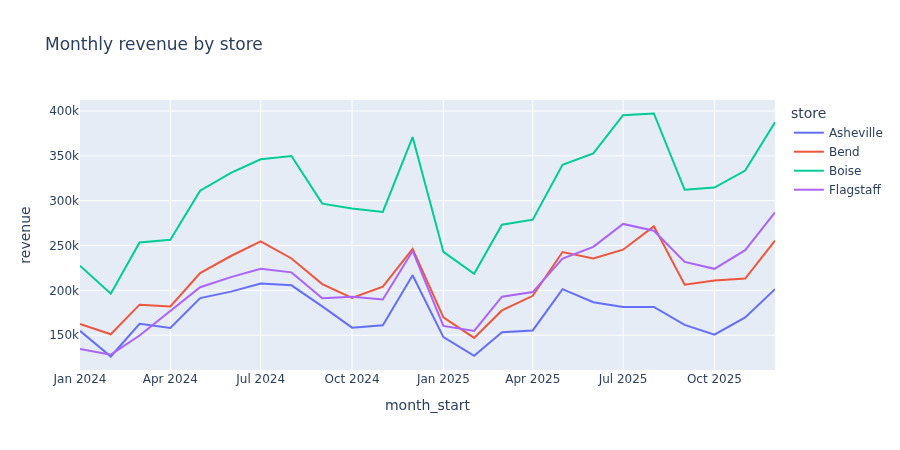
Try each of these on your own chart before reading on. They work on every Plotly figure.
| Do this | What happens |
|---|---|
| Move the mouse over a line | A label shows the store, month and exact revenue of the nearest point |
| Click a name in the legend | That store's line is hidden; click again to bring it back |
| Double-click a name in the legend | Only that store is shown; double-click again for all |
| Drag a rectangle across the plot | The chart zooms to that region |
| Double-click the plot background | The zoom resets |
| Use the small toolbar at the top right (the modebar) | Pan, zoom, reset, and a camera button that downloads the current view as a PNG |
A Figure Is Data
Because a figure is a description, you can inspect it like any other object. This is the habit that makes Plotly debuggable.
trace = fig.data[0]
print(trace.type, "|", trace.name, "|", trace.mode)
print(len(trace.x), "points, first y:", trace.y[0])
print(fig.layout.title.text, "|", fig.layout.xaxis.title.text, "|", fig.layout.yaxis.title.text)
print(list(fig.to_dict()))Output
scatter | Asheville | lines
24 points, first y: 154849.61
Monthly revenue by store | month_start | revenue
['data', 'layout']Four stores became four traces of type scatter drawn in lines mode (in Plotly, a line chart is a scatter trace that connects its points). Each trace carries its own copy of the 24 x and y values. The whole figure is two things, data and layout, and everything you do for the rest of the lesson changes one or the other.
🧩 The Plotly Express Pattern
If you understood seaborn's data, x, y, hue, you already know Plotly Express. The argument names differ a little.
| Role | seaborn | Plotly Express |
|---|---|---|
| The table | data= | first argument (data_frame=) |
| Color by a column | hue= | color= |
| Marker shape or line dash | style= | symbol=, line_dash= |
| Marker size | size= | size= |
| Panels | col=, row=, col_wrap= | facet_col=, facet_row=, facet_col_wrap= |
| Order of categories | order=, hue_order= | category_orders={"col": [...]} |
| Readable names | set labels on the Axes | labels={"col": "Nice name"} |
| Extra detail on hover | (none) | hover_name=, hover_data= |
A scatter of daily revenue against visitors uses most of these.
stores = ["Boise", "Bend", "Flagstaff", "Asheville"]
fig = px.scatter(sales, x="visitors", y="revenue", color="store", opacity=0.5,
category_orders={"store": stores},
labels={"visitors": "Visitors per day", "revenue": "Revenue ($)", "store": "Store"},
title="Daily revenue against foot traffic")
print(len(fig.data), "traces of type", fig.data[0].type)Output
4 traces of type scattergl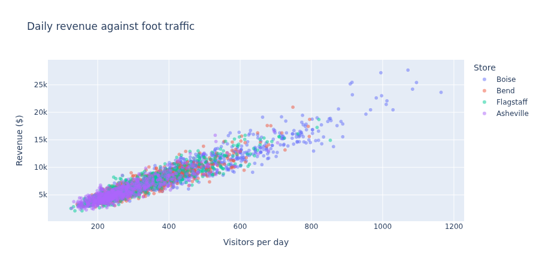
The trace type printed as scattergl, not scatter. When a scatter has more than a thousand points, Express switches to a WebGL trace, which the browser draws with the graphics card. You did nothing, and the chart stays smooth. It is a good example of Express making a sensible choice for you.
Charts That Aggregate, and Charts That Do Not
Here Plotly differs from seaborn in a way that catches people. sns.barplot averages the rows in each category. px.bar does not: it draws one bar segment per row. So you aggregate first, with pandas, and hand Express the summary.
by_store = (sales.groupby("store", as_index=False)["revenue"].mean()
.sort_values("revenue", ascending=False))
print(by_store.round(0))
fig = px.bar(by_store, x="store", y="revenue", text_auto=",.0f",
labels={"revenue": "Mean daily revenue ($)", "store": ""},
title="Mean daily revenue by store")
fig.update_traces(marker_color="#667eea")Output
store revenue
2 Boise 10144.0
1 Bend 6998.0
3 Flagstaff 6890.0
0 Asheville 5704.0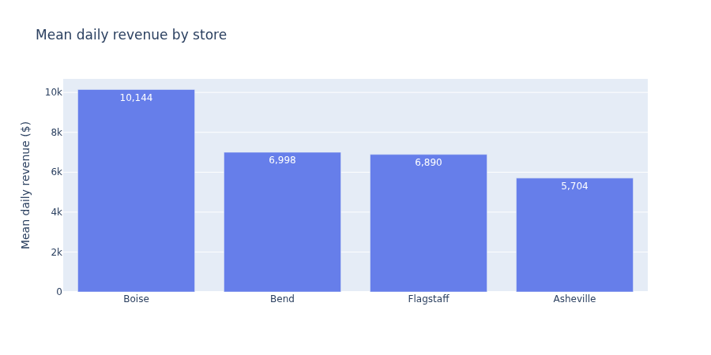
text_auto prints each value on its bar, using the number format you give it.The functions that do summarize are the distribution charts: px.histogram, px.box, px.violin and px.ecdf. A box plot by weekday needs no preparation beyond the weekday column.
days = ["Mon", "Tue", "Wed", "Thu", "Fri", "Sat", "Sun"]
sales["weekday"] = sales["date"].dt.day_name().str[:3]
fig = px.box(sales, x="weekday", y="revenue", color="store",
category_orders={"weekday": days, "store": stores},
labels={"revenue": "Daily revenue ($)", "weekday": "", "store": "Store"},
title="Daily revenue by weekday and store")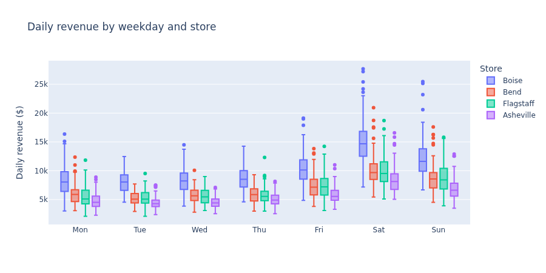
✅ Interactivity Changes What Is Reasonable
A static chart with 28 boxes would be too busy to publish. An interactive one can afford more, because the reader can isolate a group. That is not a license to cram everything in. It means the default view should be clean, with the detail available on request.
💬 Designing the Hover
The hover label is where an interactive chart earns its keep, and the default label is rarely the one you want. Here is what Express wrote for the scatter above.
fig = px.scatter(sales, x="visitors", y="revenue", color="store")
print(fig.data[0].hovertemplate)Output
store=Asheville<br>visitors=%{x}<br>revenue=%{y}<extra></extra>That template is a small piece of HTML with placeholders: %{x} and %{y} are filled from the point under the mouse and <br> is a line break. It shows the store, visitors and revenue, but not the one thing you want to know about an unusual point: which day is it?
Level 1: hover_name and hover_data
Two Express arguments cover most needs. hover_name picks a column for the bold first line. hover_data is a dictionary of columns: True adds one, False removes one, and a string starting with a colon adds it with a number format.
sales["day"] = sales["date"].dt.strftime("%a %b %d, %Y")
sales["promo"] = sales["promo_day"].map({0: "no", 1: "yes"})
fig = px.scatter(sales, x="visitors", y="revenue", color="store", opacity=0.5,
category_orders={"store": stores},
hover_name="day", title="Hover a point to identify the day",
hover_data={"store": True, "revenue": ":$,.0f", "visitors": ":,",
"transactions": True, "promo": True},
labels={"visitors": "Visitors", "revenue": "Revenue", "store": "Store",
"transactions": "Transactions", "promo": "Promotion day"})
print(fig.data[0].hovertemplate)Output
<b>%{hovertext}</b><br><br>Store=%{customdata[0]}<br>Visitors=%{x:,}<br>Revenue=%{y:$,.0f}<br>Transactions=%{customdata[1]}<br>Promotion day=%{customdata[2]}<extra></extra>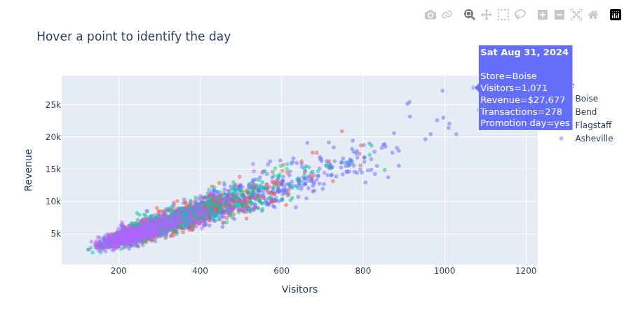
The format strings after the colon follow the d3-format rules used across Plotly: , for thousands separators, .0f for no decimals, $ for a dollar sign, .1% for a percentage. Columns named in hover_data that are not on an axis travel in a hidden per-point field called customdata, which is why the template refers to customdata[0].
Level 2: Write the Template Yourself
For full control, set hovertemplate with update_traces. Dates take a format after a vertical bar. The tag <extra></extra> at the end removes the second box that otherwise repeats the trace name.
fig = px.line(monthly, x="month_start", y="revenue", color="store",
category_orders={"store": stores}, markers=True,
labels={"month_start": "", "revenue": "Monthly revenue ($)", "store": "Store"},
title="Monthly revenue by store")
fig.update_traces(hovertemplate="%{y:$,.0f}")
fig.update_layout(hovermode="x unified")
print(fig.layout.hovermode, "|", fig.data[0].hovertemplate)Output
x unified | %{y:$,.0f}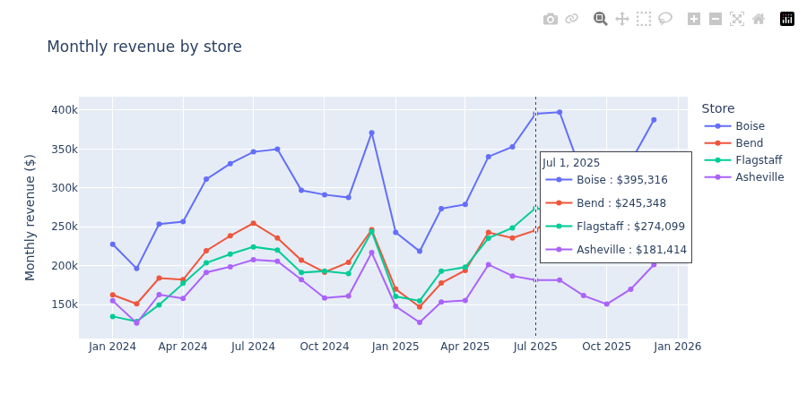
hovermode="x unified": one box for the month under the mouse, listing every store. For time series compared at the same dates this is usually the most useful hover of all.💡 Write Hovers the Way You Write Captions
Ask what the reader will want to know about a single point, and give them that, in words they use, with units. "Revenue: $27,677" beats "revenue=27677.1". Leave out anything they do not need: a hover with nine lines is as hard to read as a chart with nine colors.
🎛️ Layout, Axes and Templates
Three methods do nearly all the finishing work, and each one returns the figure so that calls can be chained.
fig.update_layout(...): things that belong to the whole figure. Title, legend, margins, size, hover mode, template.fig.update_xaxes(...)andfig.update_yaxes(...): tick formats, ranges, grid lines, axis titles. They apply to every panel of a faceted figure at once.fig.update_traces(...): things that belong to the data series. Marker size, line width, hover template.
fig = px.line(monthly, x="month_start", y="revenue", color="store",
category_orders={"store": stores},
labels={"month_start": "", "revenue": "", "store": ""},
template="plotly_white")
fig.update_traces(hovertemplate="%{y:$,.0f}", line_width=2.5)
fig.update_layout(
title_text="Flagstaff has overtaken Bend; Asheville is drifting down",
hovermode="x unified",
legend=dict(orientation="h", yanchor="bottom", y=1.0, x=0),
margin=dict(l=40, r=20, t=80, b=40),
height=450,
)
fig.update_yaxes(tickprefix="$", tickformat=",.0f", rangemode="tozero")
fig.update_xaxes(dtick="M3", tickformat="%b\n%Y", rangeslider_visible=True)
print(fig.layout.template.layout.plot_bgcolor, fig.layout.yaxis.tickprefix, fig.layout.xaxis.dtick)Output
white $ M3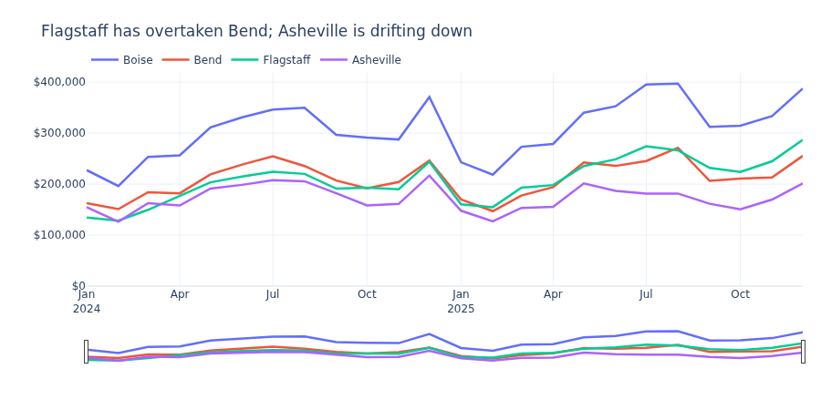
A few of these deserve a comment:
- Underscore shortcuts.
title_text="..."is short fortitle=dict(text="..."), andline_width=2.5forline=dict(width=2.5). Any nested property can be written with underscores. - Templates are Plotly's themes.
"plotly"is the default (pale blue-gray background),"plotly_white"and"simple_white"are quieter,"plotly_dark"suits dark pages. Set one for a whole session withpx.defaults.template = "plotly_white". rangemode="tozero"forces the y axis to include zero. Plotly, like Matplotlib, otherwise fits the axis to the data, which exaggerates differences on a line chart of totals.- Colors for categories are set with
color_discrete_sequence=[...]or, to pin a color to a value,color_discrete_map={"Boise": "#667eea", ...}in the Express call.
✅ The Title Is Still the Message
Everything from Lesson 3.3 about titles that state the finding applies here. Interactivity lets the reader explore, but most readers will look at the default view for a few seconds and move on. Make those seconds count.
🔲 Facets and Trendlines
Small multiples work as in seaborn, with facet_col, facet_row and facet_col_wrap. Express can also fit and draw a regression line per group with trendline="ols" (ordinary least squares, computed by statsmodels, which you installed in Lesson 0.1).
fig = px.scatter(sales, x="visitors", y="revenue", color="promo", opacity=0.45,
facet_col="store", facet_col_wrap=2, category_orders={"store": stores},
trendline="ols", trendline_scope="trace",
hover_name="day",
labels={"visitors": "Visitors per day", "revenue": "Revenue ($)", "promo": "Promotion day"},
height=600)
fig.for_each_annotation(lambda a: a.update(text=a.text.split("=")[-1]))
print(len(fig.data), "traces;", [a.text for a in fig.layout.annotations])Output
16 traces; ['Flagstaff', 'Asheville', 'Boise', 'Bend']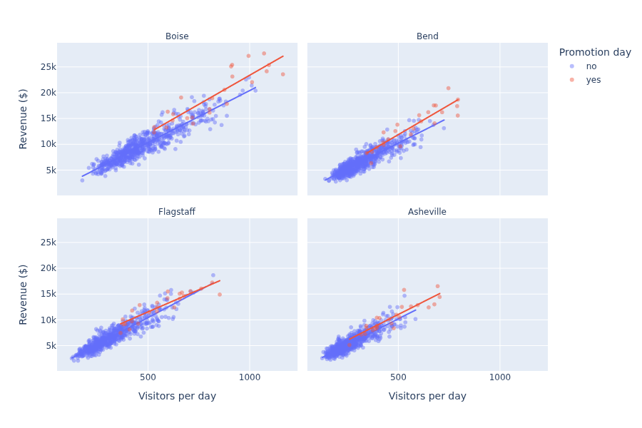
Facet titles arrive as store=Boise. They are layout annotations, and the for_each_annotation line rewrites each one to keep only the part after the equals sign. It is a line worth saving in your notes: you will use it on almost every faceted figure.
The fitted models are not only pictures. px.get_trendline_results returns the statsmodels result objects, so you can read the slope: the extra revenue that goes with one more visitor.
fig_fit = px.scatter(sales, x="visitors", y="revenue", facet_col="store", trendline="ols")
results = px.get_trendline_results(fig_fit)
for store, model in zip(results["store"], results["px_fit_results"]):
print(f"{store:<10} ${model.params[1]:5.2f} per visitor R-squared {model.rsquared:.2f}")Output
Asheville $20.73 per visitor R-squared 0.81
Bend $21.32 per visitor R-squared 0.84
Boise $21.39 per visitor R-squared 0.87
Flagstaff $21.25 per visitor R-squared 0.86⚠️ A Line Through Points Is Not a Promise
The slope describes this data: busy days are high-revenue days. It does not say that bringing one more person through the door causes that much revenue, for the reasons you studied in Lesson 4.4. Trendlines are quick to add and easy to over-read.
🎞️ Animation, with Restraint
Add animation_frame="column" to an Express call and the figure gains a play button and a slider: one frame per value of that column. It is impressive in a demo. It is also the feature most often used where it does not help, so learn it together with its limits.
The example is category seasonality. Build revenue by product category and calendar month from the order lines (an inner merge drops the few lines whose products have been discontinued).
orders = pd.read_csv("data/orders.csv", parse_dates=["order_date"])
items = pd.read_csv("data/order_items.csv")
products = pd.read_csv("data/products.csv")
done = orders.loc[orders["status"] == "completed", ["order_id", "order_date"]]
lines = items.merge(done, on="order_id").merge(products[["sku", "category"]], on="sku")
lines["line_total"] = lines["quantity"] * lines["unit_price"]
lines["month"] = lines["order_date"].dt.month
cat_month = lines.groupby(["category", "month"], as_index=False)["line_total"].sum()
print(cat_month.shape)
print(cat_month[cat_month["category"] == "Snow"].round(0).to_string(index=False))Output
(108, 3)
category month line_total
Snow 1 42252.0
Snow 2 35021.0
Snow 3 14163.0
Snow 4 3256.0
Snow 5 1580.0
Snow 6 1088.0
Snow 7 169.0
Snow 8 728.0
Snow 9 2686.0
Snow 10 18965.0
Snow 11 36931.0
Snow 12 60100.0cat_order = cat_month.groupby("category")["line_total"].sum().sort_values().index.tolist()
top = cat_month["line_total"].max()
fig = px.bar(cat_month, x="line_total", y="category", animation_frame="month",
category_orders={"category": cat_order},
range_x=[0, top * 1.05],
labels={"line_total": "Revenue in this calendar month, 2024 and 2025 combined ($)", "category": ""},
title="Revenue by category through the year")
print(len(fig.frames), "frames; x axis fixed at 0 to", round(fig.layout.xaxis.range[1]))Output
12 frames; x axis fixed at 0 to 77109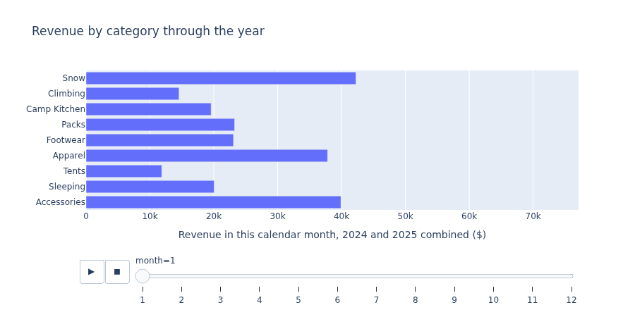
Two details make an animation honest. Fix the axis range (range_x here): by default the axis is fitted to the first frame, and later bars run off the edge. Fix the category order, or the bars jump around between frames.
The Same Story, Standing Still
An animation asks the reader to remember frame 3 while looking at frame 9. People are poor at that. Small multiples put every month on screen at once.
fig = px.line(cat_month, x="month", y="line_total", facet_col="category", facet_col_wrap=3,
category_orders={"category": cat_order[::-1]}, markers=True,
labels={"line_total": "", "month": ""}, height=560,
title="Every category has its season")
fig.for_each_annotation(lambda a: a.update(text=a.text.split("=")[-1]))
fig.update_xaxes(dtick=3)
fig.update_yaxes(tickprefix="$", tickformat="~s")
fig.update_traces(hovertemplate="month %{x}: %{y:$,.0f}")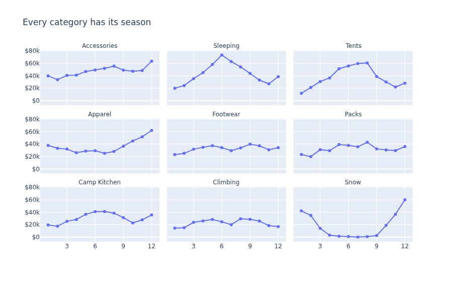
| Animation helps when | Prefer small multiples or a line when |
|---|---|
| The motion itself is the message (a few points drifting together over time) | The reader needs to compare periods with each other |
| You are presenting live and narrating each step | The chart will be read alone, printed or skimmed |
| There are too many frames to show side by side, and only the trend matters | There are a dozen frames or fewer |
🔩 Graph Objects, When You Need Them
Every Express function returns a plotly.graph_objects.Figure. Express is a fast way to build one. You can always keep working on it with the graph-objects layer, and for a few jobs you start there. The usual reasons:
- adding reference lines, shaded regions and annotations to an Express figure
- combining different trace types in one plot, such as bars and a line
- a second y axis with its own scale
- a layout of unrelated subplots that no single table describes
Adding to an Express Figure
boise = sales[(sales["store"] == "Boise") & (sales["date"] >= "2025-10-01")]
fig = px.line(boise, x="date", y="revenue", template="plotly_white",
labels={"date": "", "revenue": "Daily revenue ($)"},
title="Boise, fourth quarter of 2025")
fig.add_hline(y=boise["revenue"].mean(), line_dash="dash", line_color="gray",
annotation_text="quarter average", annotation_position="top left")
fig.add_vrect(x0="2025-11-28", x1="2025-12-01", fillcolor="orange", opacity=0.25, line_width=0)
fig.add_annotation(x="2025-11-29", y=boise["revenue"].max(), text="Black Friday weekend",
showarrow=True, arrowhead=2, ax=-90, ay=10)
print(len(fig.layout.shapes), "shapes,", len(fig.layout.annotations), "annotations")Output
2 shapes, 2 annotations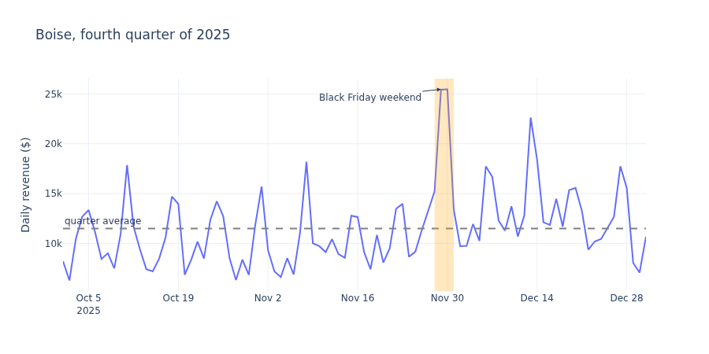
Two Trace Types and Two Axes
Monthly revenue is in dollars and conversion rate (transactions divided by visitors) is a percentage. They cannot share a y axis. make_subplots creates a figure whose single plot has a secondary y axis, and you add one go trace to each.
import plotly.graph_objects as go
from plotly.subplots import make_subplots
flag = monthly[monthly["store"] == "Flagstaff"].copy()
flag["conversion"] = flag["transactions"] / flag["visitors"]
fig = make_subplots(specs=[[{"secondary_y": True}]])
fig.add_trace(go.Bar(x=flag["month_start"], y=flag["revenue"], name="Revenue",
marker_color="#667eea", hovertemplate="%{y:$,.0f}"),
secondary_y=False)
fig.add_trace(go.Scatter(x=flag["month_start"], y=flag["conversion"], name="Conversion rate",
mode="lines+markers", line_color="#d97706", hovertemplate="%{y:.1%}"),
secondary_y=True)
fig.update_yaxes(title_text="Monthly revenue", tickprefix="$", tickformat=",.0f", secondary_y=False)
fig.update_yaxes(title_text="Visitors who buy", tickformat=".0%", range=[0.20, 0.27],
showgrid=False, secondary_y=True)
fig.update_layout(title_text="Flagstaff: revenue grew while conversion stayed flat",
template="plotly_white", hovermode="x unified",
legend=dict(orientation="h", y=1.0, yanchor="bottom", x=0))
print([t.type for t in fig.data], [t.yaxis for t in fig.data])
print(flag["conversion"].agg(["min", "max"]).round(3).tolist())Output
['bar', 'scatter'] ['y', 'y2']
[0.228, 0.245]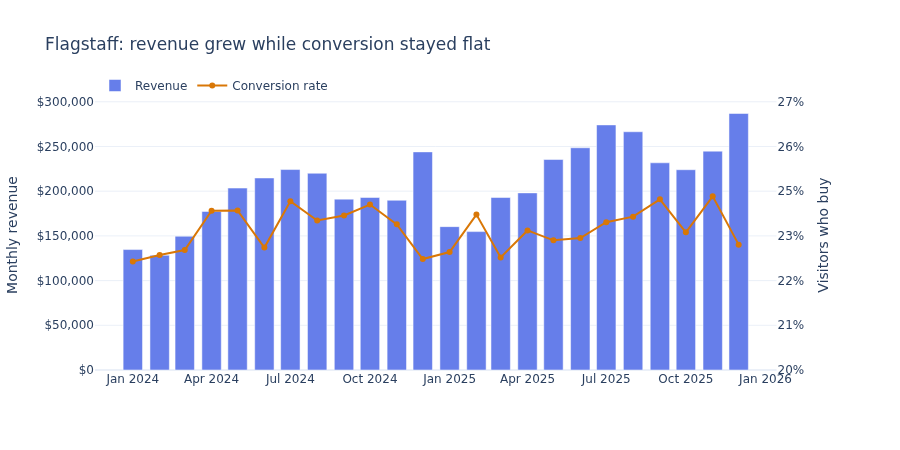
⚠️ Two Axes Can Tell Any Story
By stretching or squeezing the right-hand axis you can make the line look steep or flat, and make it cross the bars wherever you like. Readers also tend to compare the heights of the two series, which is meaningless. Use a dual-axis chart only when the two measures share an x axis for a reason, label both axes clearly, and consider two stacked panels as the more honest alternative.
💡 A Working Rule
Start every chart with Express. Reach for add_hline, add_vrect and add_annotation when you need to point at something. Start from go.Figure or make_subplots only when you are mixing trace types or axes. If you find yourself writing a loop of fig.add_trace(go.Scatter(...)) over the groups of a tidy table, stop: that is what color= does.
⚠️ Common Mistakes
1. A Column Name That Is Not in the Table
px.scatter(monthly, x="visitors", y="revenu")Error
ValueError: Value of 'y' is not the name of a column in 'data_frame'. Expected one of ['store', 'month_start', 'revenue', 'visitors', 'transactions'] but received: revenuWhat it means: exactly what it says, and it lists the columns that do exist. Fix: correct the spelling. If the column you want is the index (after a groupby without as_index=False), call .reset_index() first.
2. A Misspelled Layout Property
fig.update_layout(tittle="Monthly revenue")Error (first lines of about five hundred)
ValueError: Invalid property specified for object of type plotly.graph_objs.Layout: 'tittle'
Did you mean "title"?
...
Did you mean "title"?
Bad property path:
tittle
^^^^^^What it means: Plotly checks every property name and refuses unknown ones. The message is enormous because it lists every valid layout property. Fix: read only the first three lines and the last three. The suggestion ("Did you mean ...") is usually right.
3. Handing px.bar Unaggregated Rows
wrong = px.bar(sales, x="store", y="revenue")
print(len(wrong.data[0].x), "bar segments")
right = px.bar(sales.groupby("store", as_index=False)["revenue"].sum(), x="store", y="revenue")
print(len(right.data[0].x), "bars")Output
2903 bar segments
4 barsWhat it means: there is no error. The first chart looks like four bars, but each is a pile of about 725 slivers, one per day. The chart is heavy, the hover shows one day at a time, and the height of each pile is not a statistic you chose. If you had a mean in mind, the picture is simply wrong. Fix: aggregate with pandas, then plot. (To let Plotly aggregate, use px.histogram(sales, x="store", y="revenue", histfunc="avg").)
4. Categories in the Wrong Order
mean_by_day = sales.groupby("weekday", as_index=False)["revenue"].mean()
print(mean_by_day["weekday"].tolist())
fig = px.bar(mean_by_day, x="weekday", y="revenue", category_orders={"weekday": days})
print(list(fig.layout.xaxis.categoryarray))Output
['Fri', 'Mon', 'Sat', 'Sun', 'Thu', 'Tue', 'Wed']
['Mon', 'Tue', 'Wed', 'Thu', 'Fri', 'Sat', 'Sun']What it means: groupby sorted the weekday names alphabetically, and Plotly draws categories in the order of the rows. Fix: category_orders, as in the second call. It is Plotly's equivalent of seaborn's order=.
5. Nothing Appears, or the Notebook Becomes Huge
Two problems without an error message. If a cell runs and shows nothing, you built the figure and did not display it: add fig.show(). If a notebook file grows to tens of megabytes and becomes slow to open, it is storing the full data of every figure you displayed, because each output holds the figure's JSON. Clear the outputs before saving (Edit → Clear Outputs of All Cells in JupyterLab), and plot aggregated tables where you can.
🛠️ Project: The Sales Explorer
The regional manager liked the store brief from Lesson 7.1 and replied with five follow-up questions about individual months and days. Instead of five more pictures, send one file she can explore herself. You will build three charts and assemble them, with a few sentences of guidance, into a single sales_explorer.html. Allow about 35 minutes.
🛠️ Step 1: Prepare tidy, minimal tables (6 min)
Start from a fresh load so that the project runs by itself. Keep only the columns the charts will use: remember that whatever you pass in ends up inside the file.
sales = pd.read_csv("data/daily_sales.csv", parse_dates=["date"])
sales["month_start"] = sales["date"].dt.to_period("M").dt.to_timestamp()
sales["weekday"] = sales["date"].dt.day_name().str[:3]
sales["month"] = sales["date"].dt.month
sales["day"] = sales["date"].dt.strftime("%a %b %d, %Y")
sales["promo"] = sales["promo_day"].map({0: "no", 1: "yes"})
monthly = sales.groupby(["store", "month_start"], as_index=False)["revenue"].sum()
points = sales[["store", "day", "visitors", "revenue", "promo"]].dropna()
grid = sales.pivot_table(index="weekday", columns="month", values="revenue", aggfunc="mean").loc[days]
print(monthly.shape, points.shape, grid.shape)Output
(96, 3) (2897, 5) (7, 12)🛠️ Step 2: Chart 1, the trend (7 min)
A line per store with a unified hover and a range slider. Set an explicit height on each figure: inside a page, a chart with no height of its own can collapse.
px.defaults.template = "plotly_white"
fig_trend = px.line(monthly, x="month_start", y="revenue", color="store",
category_orders={"store": stores},
labels={"month_start": "", "revenue": "", "store": ""})
fig_trend.update_traces(hovertemplate="%{y:$,.0f}")
fig_trend.update_layout(title_text="Monthly revenue by store", hovermode="x unified", height=460,
legend=dict(orientation="h", y=1.0, yanchor="bottom", x=0))
fig_trend.update_yaxes(tickprefix="$", tickformat=",.0f", rangemode="tozero")
fig_trend.update_xaxes(rangeslider_visible=True)🛠️ Step 3: Chart 2, every store-day (7 min)
The scatter with a hover that names the day. This is the chart that answers "what was that spike?".
fig_days = px.scatter(points, x="visitors", y="revenue", color="store", symbol="promo",
opacity=0.55, category_orders={"store": stores, "promo": ["no", "yes"]},
hover_name="day",
hover_data={"store": True, "visitors": ":,", "revenue": ":$,.0f", "promo": True},
labels={"visitors": "Visitors", "revenue": "Revenue", "store": "Store",
"promo": "Promotion day"})
fig_days.update_layout(title_text="Each point is one store on one day", height=520)
fig_days.update_yaxes(tickprefix="$", tickformat=",.0f")🛠️ Step 4: Chart 3, the calendar heatmap (5 min)
px.imshow is Plotly's heatmap for a wide table, like sns.heatmap.
fig_heat = px.imshow(grid.round(0), text_auto=",.0f", aspect="auto",
color_continuous_scale="YlGnBu",
labels={"x": "Month", "y": "", "color": "Mean daily revenue ($)"})
fig_heat.update_layout(title_text="When the stores are busy: mean daily revenue per store", height=420)
fig_heat.update_xaxes(dtick=1)
print(fig_heat.data[0].type, fig_heat.data[0].z.shape)Output
heatmap (7, 12)🛠️ Step 5: Assemble one HTML file (10 min)
Turn each figure into a fragment. The first fragment loads plotly.js; the others reuse it, so the library is loaded once. Then wrap the fragments in a small page of your own.
parts = [
fig_trend.to_html(full_html=False, include_plotlyjs="cdn"),
fig_days.to_html(full_html=False, include_plotlyjs=False),
fig_heat.to_html(full_html=False, include_plotlyjs=False),
]
page = f"""<!DOCTYPE html>
<html lang="en">
<head>
<meta charset="utf-8">
<meta name="viewport" content="width=device-width, initial-scale=1">
<title>Pinecrest Sales Explorer</title>
<style>
body {{ font-family: system-ui, sans-serif; max-width: 1000px; margin: 2rem auto; padding: 0 1rem; color: #222; }}
p.note {{ color: #555; }}
</style>
</head>
<body>
<h1>Pinecrest Sales Explorer</h1>
<p>In-store sales for the four Pinecrest Outfitters stores, 2024 to 2025 (fictional course data).
Hover any chart for exact figures. Click a store in a legend to hide it, double-click to show it alone.
Drag to zoom, double-click to reset.</p>
<h2>1. How is each store trending?</h2>
{parts[0]}
<p class="note">Drag the handles of the strip under the chart to focus on a period.</p>
<h2>2. Which days stand out?</h2>
{parts[1]}
<p class="note">Diamonds are promotion days. Hover a point to see its date.</p>
<h2>3. When are the stores busy?</h2>
{parts[2]}
</body>
</html>
"""
Path("sales_explorer.html").write_text(page, encoding="utf-8")
saved = Path("sales_explorer.html").read_text(encoding="utf-8")
print(saved.count("plotly-graph-div"), "charts,", saved.count("cdn.plot.ly"), "library link,",
round(len(saved) / 1024), "KB")Output (the size will differ slightly between Plotly versions)
3 charts, 1 library link, 174 KBOpen sales_explorer.html by double-clicking it in your file manager. Then test it the way a reader would: find the date of the single best day, hide every store except Asheville, and zoom the first chart to the summer of 2025.
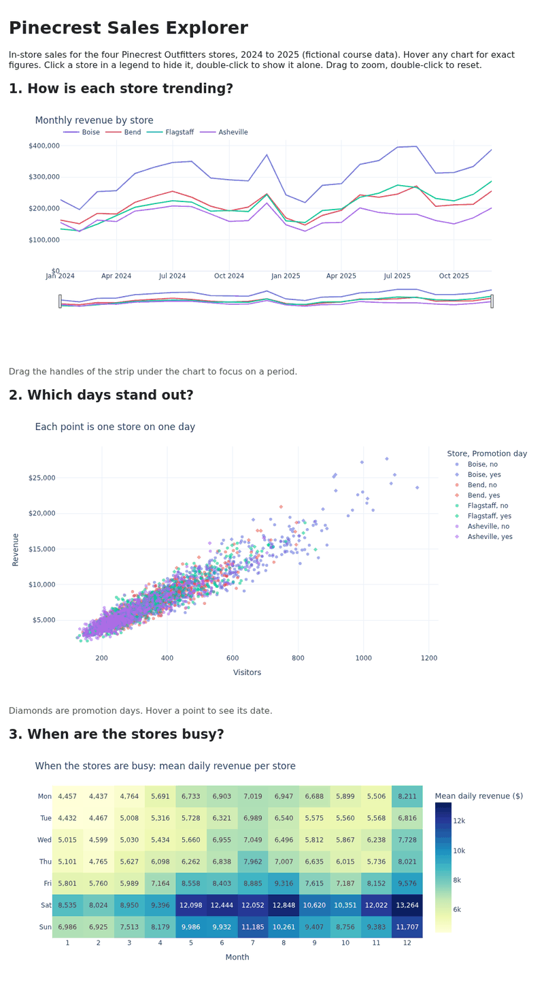
✅ Project Completion Checklist
sales_explorer.htmlopens from your file manager and shows three charts- Hovering a point in the second chart shows the day, store, visitors, revenue and promotion status, with formatted numbers
- The first chart has one hover box per month and a working range slider
- Stores and weekdays appear in a deliberate order in all three charts
- The tables you passed to Plotly hold only the columns the charts use
- The page has a title and one or two sentences telling a first-time reader what they can do
🏋️ Hands-on Exercises
🏋️ Exercise 1: Year over Year
Make a grouped bar chart of total revenue per store with one bar for 2024 and one for 2025, the value printed on each bar in thousands of dollars. Stores in the usual order.
💡 Hint
Aggregate by store and year first. Convert the year to text so that Plotly treats it as a category, and use barmode="group".
✅ Solution
yearly = sales.assign(year=sales["date"].dt.year.astype(str)).groupby(["store", "year"], as_index=False)["revenue"].sum()
yearly["revenue_k"] = yearly["revenue"] / 1000
print(yearly.round(0).to_string(index=False))
fig = px.bar(yearly, x="store", y="revenue_k", color="year", barmode="group", text_auto=",.0f",
category_orders={"store": stores},
labels={"revenue_k": "Revenue ($ thousands)", "store": "", "year": "Year"},
title="Store revenue, 2024 and 2025")Output
store year revenue revenue_k
Asheville 2024 2123278.0 2123.0
Asheville 2025 2017699.0 2018.0
Bend 2024 2476118.0 2476.0
Bend 2025 2569350.0 2569.0
Boise 2024 3518292.0 3518.0
Boise 2025 3846406.0 3846.0
Flagstaff 2024 2270180.0 2270.0
Flagstaff 2025 2717997.0 2718.0If you leave the year as a number, Plotly treats color as a continuous scale and draws a color bar instead of a two-entry legend. Numbers that are really labels should be text.
🏋️ Exercise 2: A Hover Worth Reading
Plot Asheville's daily revenue as a line. Write a hovertemplate that shows the date as "Sat Jul 05, 2025", the revenue in whole dollars, and the number of visitors, each on its own line, with no trace-name box.
💡 Hint
Pass custom_data=["visitors"] to px.line, then refer to it as %{customdata[0]:,}. Dates: %{x|%a %b %d, %Y}.
✅ Solution
ash = sales[sales["store"] == "Asheville"]
fig = px.line(ash, x="date", y="revenue", custom_data=["visitors"],
labels={"date": "", "revenue": "Daily revenue ($)"}, title="Asheville daily revenue")
fig.update_traces(hovertemplate="<b>%{x|%a %b %d, %Y}</b><br>Revenue: %{y:$,.0f}<br>Visitors: %{customdata[0]:,}<extra></extra>")
fig.update_xaxes(rangeslider_visible=True)
print(fig.data[0].customdata[:2].tolist())Output
[[201], [209]]The line has breaks where a day's revenue is missing: Plotly does not join across a missing value, which is the honest default.
🏋️ Exercise 3: Shares, Not Counts
Using data/survey.csv, show for each of the four stores what percentage of respondents gave each staff rating from 1 to 5, as stacked bars that each add up to 100%.
💡 Hint
Count with groupby([...]).size(), convert the rating to text, and pass barnorm="percent" to px.histogram with histfunc="sum".
✅ Solution
survey = pd.read_csv("data/survey.csv")
rated = survey[survey["store"].isin(stores)].dropna(subset=["sat_staff"])
counts = rated.groupby(["store", "sat_staff"]).size().reset_index(name="responses")
counts["rating"] = counts["sat_staff"].astype(int).astype(str)
fig = px.histogram(counts, x="store", y="responses", color="rating", histfunc="sum", barnorm="percent",
category_orders={"store": stores, "rating": ["1", "2", "3", "4", "5"]},
color_discrete_sequence=px.colors.sequential.RdBu[1:10:2],
labels={"store": "", "rating": "Staff rating"},
title="Staff satisfaction ratings by store")
fig.update_yaxes(title_text="Share of responses (%)")
fig.update_traces(hovertemplate="%{y:.1f}%")
low = counts[counts["sat_staff"] <= 2].groupby("store")["responses"].sum() / counts.groupby("store")["responses"].sum()
print((low.loc[stores] * 100).round(1))Output
store
Boise 2.2
Bend 4.4
Flagstaff 4.4
Asheville 14.0
Name: responses, dtype: float64A red-to-blue sequence suits a rating scale with a neutral middle. The chart shows where Asheville's lower average comes from: a visibly larger share of ratings of 1 and 2.
🏋️ Exercise 4: Error Bars on an Experiment (Stretch)
From data/ab_test.csv, compute the conversion rate and an approximate 95% confidence half-width (1.96 standard errors of a proportion) for each device and variant. Draw grouped bars with error bars and a percentage axis. On which device is the difference between variants clear?
💡 Hint
The standard error of a proportion is sqrt(p * (1 - p) / n). px.bar takes error_y="column".
✅ Solution
ab = pd.read_csv("data/ab_test.csv")
rates = ab.groupby(["device", "variant"])["converted"].agg(n="count", rate="mean").reset_index()
rates["half_width"] = 1.96 * np.sqrt(rates["rate"] * (1 - rates["rate"]) / rates["n"])
print(rates.round(4).to_string(index=False))
fig = px.bar(rates, x="device", y="rate", color="variant", barmode="group", error_y="half_width",
category_orders={"device": ["mobile", "desktop", "tablet"]},
labels={"rate": "Conversion rate", "device": "", "variant": "Variant"},
title="Checkout test: conversion by device (bars show 95% confidence intervals)")
fig.update_yaxes(tickformat=".0%")
fig.update_traces(hovertemplate="%{y:.2%} ± %{error_y.array:.2%}")Output
device variant n rate half_width
desktop control 5233 0.1173 0.0087
desktop treatment 5342 0.1200 0.0087
mobile control 7667 0.0682 0.0056
mobile treatment 7795 0.0858 0.0062
tablet control 1021 0.0940 0.0179
tablet treatment 942 0.1083 0.0198On mobile the intervals are well apart. On desktop they overlap almost completely, and on tablet the intervals are wide because there are few tablet visitors. This is the finding from Lesson 4.6, now in a form a reader can check by hovering. The title says what the error bars are, the habit Lesson 7.1 asked for.
🎯 Quick Quiz
🎯 Check Your Understanding
Question 1: You must send a chart to a field office whose computers have no internet access. Which call produces a file that will work there?
Question 2: What does this print? (sales has 2,903 rows and four stores.)
quiz_fig = px.bar(sales, x="store", y="revenue", color="store")
print(len(quiz_fig.data), sum(len(t.x) for t in quiz_fig.data))Question 3: A colleague builds a scatter with one point per customer and puts email in hover_data "just for my own checking", then posts the HTML file to a shared channel. What is the problem?
Question 4: Which task is the clearest reason to go beyond a single Plotly Express call?
Question 5: You have revenue by category for each of 12 months and want readers to compare the seasons of different categories. Why are small multiples usually a better choice than animation_frame="month"?
❓ Common Questions at This Stage
When should I use Plotly and when seaborn or Matplotlib?
Ask where the chart will be read. A PDF report, a slide, a printed page or a journal: use Matplotlib and seaborn, which give exact control of a static image. A browser, a notebook shared with colleagues, a dashboard: use Plotly, because hover and zoom add real value there. For your own exploration, use whichever you type fastest. Many analysts explore with seaborn for statistics and switch to Plotly when they need to identify individual points.
Do I need an account or a paid plan to use Plotly?
No. The plotly Python library is open source and works entirely on your computer. Everything in this lesson, including saving HTML files, needs no account and sends your data nowhere. (With include_plotlyjs="cdn" the reader's browser downloads the plotly.js library from a public server; your data stays in the file.)
fig.show() displays nothing, or a blank box, in my notebook. What now?
Plotly chooses a renderer for the place it thinks it is running. Check it with import plotly.io as pio; print(pio.renderers.default). In JupyterLab and VS Code the automatic choice normally works after a restart of the kernel. If it does not, pio.renderers.default = "browser" sends every chart to a browser tab, which always works, and fig.write_html("chart.html") is the fallback that cannot fail.
How much data can a Plotly chart hold?
All of it is sent to the browser, so the limit is the reader's patience. Tens of thousands of points are comfortable, and Express switches scatters to WebGL automatically above a thousand. Hundreds of thousands start to feel slow, and the file grows by roughly the size of the data as text. Past that, aggregate: bin, sample, or summarize by day instead of by order. A chart of a million points rarely shows more than a chart of a thousand well-chosen summaries.
What is Dash? Do I need it?
Dash is a separate library from the makers of Plotly for building web applications in which controls (dropdowns, sliders) run Python code on a server. You do not need it for anything in this lesson: a Plotly HTML file is interactive without any server. When you want controls that recompute things in Python, this course uses Streamlit, in Lesson 7.4.
🌟 Going Further: Bonus Challenge
Add a dropdown to the trend chart that switches the y axis between revenue and visitors, with no server. Build the figure with one trace per store for revenue and one per store for visitors (eight traces), then use fig.update_layout(updatemenus=[...]) with two buttons whose method is "update" and whose args set visible to a list of eight booleans. Search the Plotly documentation for "custom buttons". Check your work with print([t.visible for t in fig.data]).
📓 Learning Journal
Take five minutes to write in your learning journal (the journal.md file you started in Lesson 0.1, or a paper notebook). Jot down:
- Key concepts you learned today
- Techniques that clicked (and the ones that have not, yet)
- Questions or confusion to come back to
- Ideas to try on your own
- Progress and feelings: how did this lesson go for you?
✍️ This lesson's prompt: Open your sales_explorer.html and spend three minutes exploring it as if you had never seen the data. What did you find by hovering or zooming that the static store brief from Lesson 7.1 could not have shown you? And what did the static brief say more clearly?
📝 Lesson Summary
🎓 Key Takeaways
- A Plotly figure is a description (traces plus layout) that plotly.js draws in a browser. Python builds it; the browser makes it interactive.
- Plotly Express follows the seaborn pattern with
color,facet_col,category_ordersandlabels. Unlike seaborn,px.barandpx.linedo not aggregate: summarize with pandas first. - Design the hover:
hover_name,hover_data, or ahovertemplatewith formats, andhovermode="x unified"for time series. - Finish with
update_layout,update_xaxes,update_yaxesandupdate_traces. The title still states the finding. - Animation is for motion that is itself the message. For comparison, small multiples win.
- Graph objects add reference lines, annotations, mixed trace types and secondary axes.
write_htmlmakes a standalone file (library included, or linked with"cdn");write_imagewith Kaleido makes a picture. The HTML file contains the data you passed in.
🏆 What You've Accomplished
- Built line, scatter, bar, box, faceted, animated and dual-axis interactive charts
- Wrote hover labels that answer a reader's next question
- Assembled three charts and your own text into one shareable HTML report
- Learned to check what a file contains before you send it
🔭 Looking Ahead
Your three charts sit on one page, but they do not talk to each other: selecting days in the scatter does nothing to the trend. In Lesson 7.3: Interactive Charts with Bokeh you will meet a library built around exactly that idea. Charts that share a data source respond to each other, so that a selection in one highlights the same rows in all.
📋 Before the Next Lesson
- Send
sales_explorer.htmlto yourself by email and open it on a phone: does it still work, and is it readable? - Open the file in a text editor and find the revenue numbers, to see for yourself that the data is inside
- Check that Bokeh is installed:
python -c "import bokeh; print(bokeh.__version__)"should print a version starting with 3
🌱 Encouragement for the Journey
There is a lot of Plotly, and nobody holds all of its property names in their head. What you need is small: the Express pattern, the four update_ methods, and the confidence to read an error message's first and last lines. You have those now. The rest you will look up, one property at a time, exactly when a chart needs it. That is not a gap in your knowledge. It is how everyone uses this library.